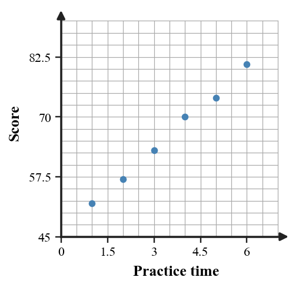
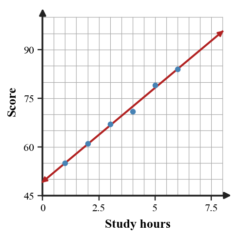
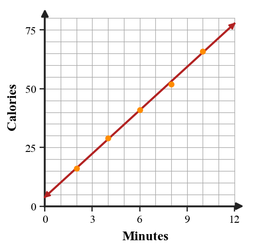
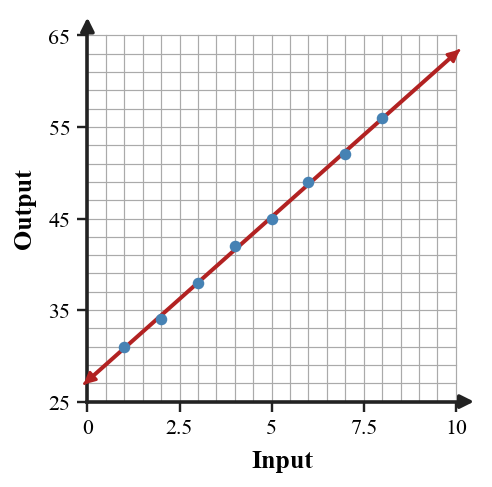

Linear Modeling with Data
Mathematical idea: A linear model summarizes a data trend, but its usefulness depends on how well it fits the data and the question.
Today you will describe association, choose lines of fit, make predictions, and judge reasonableness. You will also think about when a linear model is useful or limited.
Learning Target
Learning Target: Students will use linear models to represent and interpret real-world data.
I can statements
- I can design linear models that represent patterns in real-world data.
- I can predict values using a linear model and interpret the result.
- I can assess whether a linear model fits a data situation well enough for the question being asked.
What's To Come
This is a long-range preview for future lessons. Do not solve it today. Instead, annotate it individually. Circle anything familiar, underline symbols or directions that seem important, and write notes about what information you think will be needed later.
As you annotate, ask yourself: What parts (words, symbols, graphs) do you KNOW? What parts look FAMILIAR? What parts look like jibberish?

Intro
Directions
Read the introduction aloud with a partner or in a small group. As you read, annotate the text by highlighting important ideas, circling key vocabulary, and writing short notes about connections, questions, or predictions in the margins.
A scatter plot shows data as separate points instead of one exact line. A positive association means the points tend to rise from left to right as the input increases. A negative association means the points tend to fall from left to right.
A line of fit is a straight line that follows the overall trend of the data. It can be used to estimate or predict values, even when the actual data points do not land perfectly on the line. The slope of the line describes the average rate of change in the data.
Predictions are more reliable when they are close to the data that was collected. If the data uses weeks 1 through 8, a prediction for week 9 is nearby, but a prediction for week 30 assumes the same trend continues for a long time. The farther the prediction is from the data range, the more evidence is needed.
You will use scatter plots, lines of fit, tables of data, and model equations. You will also make residual-style observations by noticing which points are above or below a model.
Linear models are useful when the data has an approximately straight trend. They are limited when the data bends, has a strong outlier, or changes rate in different parts of the graph.
Stop and Discuss
- What does a positive association show in a scatter plot?
- What is a line of fit used for?
- Why should predictions outside the data range be treated carefully?
A scatter plot shows association by the overall direction of the points.
| Pattern | Meaning |
|---|---|
| points rise left to right | positive association |
| points fall left to right | negative association |
| no clear direction | little or no association |

Context: If $x$ is practice time and $y$ is score, a positive association means scores tend to increase as practice time increases.
Example 1: Describe Association
A scatter plot shows practice time on the $x$-axis and quiz score on the $y$-axis.
- State whether the association is positive, negative, or no association.
- Describe what the association means in the context.
- Explain whether every point must lie on a line for the association to be useful.
You Try It 1: Describe Another Association
A scatter plot shows outdoor temperature on the $x$-axis and hot chocolate sales on the $y$-axis. The points tend to fall from left to right.
- State whether the association is positive, negative, or no association.
- Describe what the association means in the context.
- Explain whether every point must lie on a line for the association to be useful.
Stop and Discuss
- What makes the association positive or negative: individual points or the overall trend?
A line of fit models the overall data trend so nearby values can be estimated.
$$\hat{y}\approx 6x+48$$| Study hours | 1 | 2 | 3 | 4 | 5 | 6 |
|---|---|---|---|---|---|---|
| Score | 55 | 61 | 67 | 71 | 79 | 84 |

Context: The slope means the predicted score increases by about 6 points for each additional study hour.
Example 2: Predict with a Line of Fit
Use the scatter plot and line of fit to estimate the score for 7 hours of studying.
- Estimate the output when $x=7$.
- Interpret the slope in context.
- Explain why this prediction is more reliable than predicting for 20 hours.
You Try It 2: Predict from a Model Equation
A line of fit for a delivery data set is approximately $d=4t+18$, where $t$ is time in minutes and $d$ is distance in blocks.
- Estimate the distance at $t=9$ minutes.
- Interpret the slope in context.
- Explain why predicting at $t=10$ is safer than predicting at $t=50$ if the data only goes to 8 minutes.
Stop and Discuss
- How does the line of fit turn a scatter plot into a prediction tool?
When data is not perfectly linear, choose two points that represent the overall trend instead of chasing one unusual point.
| Minutes | 2 | 4 | 6 | 8 | 10 |
|---|---|---|---|---|---|
| Calories | 16 | 29 | 41 | 52 | 66 |

Context: The model estimates calories burned from minutes, but it is approximate because the points do not form a perfect line.
Example 3: Build an Approximate Model
Choose two reasonable points to write an approximate linear model for the data.
| Minutes | 2 | 4 | 6 | 8 | 10 |
|---|---|---|---|---|---|
| Calories | 16 | 29 | 41 | 52 | 66 |
- Choose two points that represent the trend.
- Write an approximate linear model.
- Use the model to predict calories at 12 minutes and explain why it is an estimate.
You Try It 3: Build Another Approximate Model
Choose two reasonable points to write an approximate linear model for the data.
| Practice days | 1 | 2 | 3 | 4 | 5 |
|---|---|---|---|---|---|
| Free throws made | 8 | 11 | 13 | 15 | 19 |
- Choose two points that represent the trend.
- Write an approximate linear model.
- Use the model to predict free throws made on day 6 and explain why it is an estimate.
Stop and Discuss
- Why did you choose points that represent the trend instead of only the first two points?
A prediction is reasonable when it is near the data range and the model follows the trend well enough for the question.
| Check | What to look for |
|---|---|
| Range | Is the input close to collected data? |
| Fit | Are most points near the line? |
| Pattern | Does the trend stay roughly straight? |

Context: Predicting week 9 from weeks 1 through 8 is close to the data, but the prediction still depends on the trend continuing.
Example 4: Plan a Reasonable Prediction
You need to predict a value near $x=9$ from data collected for $x=1$ through $8$.
- Describe how you would place a line of fit.
- Name one check that would make the prediction more reasonable.
- Explain one warning sign that would make the model less reliable.
You Try It 4: Plan Another Prediction
You need to predict a value near $x=11$ from data collected for $x=2$ through $10$.
- Describe how you would place a line of fit.
- Name one check that would make the prediction more reasonable.
- Explain one warning sign that would make the model less reliable.
Stop and Discuss
- What evidence would make you trust a prediction near the edge of the data range?
Summary
Linear modeling with data uses a line to summarize an overall trend in a scatter plot. The model does not need to hit every point to be useful.
A line of fit has a slope and intercept, just like other linear equations. Its slope describes an average rate of change in the data context.
A common error is treating a model prediction as exact even when the data points vary around the line.
Strong understanding means you can choose a reasonable model, use it to predict, and explain whether the prediction should be trusted for the question being asked.
Common Mistakes
- Forcing every point onto the line. Why it is tempting: exact lines feel familiar from earlier sections. What to check instead: look for the overall trend.
- Ignoring outliers. Why it is tempting: one point may stand out strongly. What to check instead: decide whether it represents the pattern.
- Predicting too far away. Why it is tempting: the equation can accept any input. What to check instead: check the collected data range.
- Overstating certainty. Why it is tempting: a model gives a number. What to check instead: call predictions estimates when data varies.
- Confusing association with cause. Why it is tempting: two variables may move together. What to check instead: avoid claiming one causes the other without context evidence.
Optional Future Task Reflection
Look back at the future task. Do not solve it yet. Highlight one part that makes more sense now than it did at the beginning. Circle one part that still feels unfamiliar. Write one sentence about what representation you would look at first.
What is one idea about linear modeling with data you understand better now than at the start of class? Write at least one complete sentence.
What is one thing about linear modeling with data you still want to understand or practice? Be specific — name the idea, not just "everything."